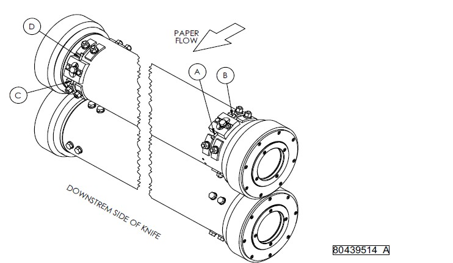

Preloading cylinder gears and setting initial position may be required when installing new blades.
Blades are extremely sharp. Keep hands and fingers away from blades.
Use cut-resistant gloves to protect hands from sharp blades.

Never force blades through a cut or damage to the blades may occur.
Dial indicator must be mounted on cylinder, not on machine frame, gear case.
CYLINDER GEAR PRELOAD CHART |
|
|---|---|
KNIFE WIDTH |
PRELOAD |
1650 mm (65 inch) |
0.20 mm (0.008 inch) |
1850 mm (73 inch) |
0.25 mm (0.010 inch) |
2500mm (98 inch) |
0.33 mm (0.013 inch) |
Do not change settings after gear backlash has been removed and gear preload has been set. To retain gear preload, advance screw A and back off screw D in equal amounts. This allows initial position of cylinders to be set without changing gear preload.
Never force blades through a cut or damage to the blades may occur.